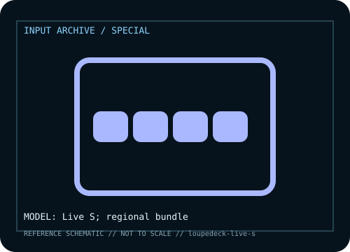

[ SPECIALIZED INPUT CONTROLLERS // IDENTIFIED COMPONENT ]
Loupedeck Live S
Compact creative control surface with touch buttons, tactile controls and app-specific actions.

MODEL IDENTIFICATION: Manufacturer model / identifier: Live S; regional bundle. Compare the unit label, regional suffix, and revision against manufacturer documentation before repair or compatibility claims.
Model specifications
| Catalog subcategory | Specialized input controllers |
|---|---|
| Exact model / ID | Live S; regional bundle |
| Model-specific features | Touch controls, physical buttons, dials and profile switching; integrations depend on software/plugins. |
| Interface and host support | USB wired; Loupedeck app and plugins determine integration with host apps. |
| Revision / driver caveat | Live S has different layout from Loupedeck Live; verify product label and current software/plugin support. |
Preservation and service notes
Export profiles, note software versions, clean display/dials dry, and preserve original cable.
Record the as-found label, accessories, host OS, driver or firmware version, and test method. Separate observed condition from published specifications; family-level claims are not proof of an individual unit's revision.
Manufacturer source
- Loupedeck Live S — manufacturer model pageModel-specific manufacturer reference for identifying specifications, regional SKU, and linked current support documentation.
Manufacturer pages can change or retire. Preserve the applicable manual and note its revision when documenting a physical device.